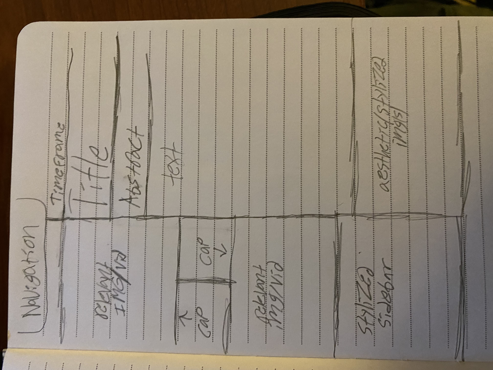

Original Design Source & Spec Page
Aliens
Spec Page
Goal and Scope
Additional Notes
Planned Grid Layouts

Resources & Assets
Photos
Yellow Tread Texture
Sticky Note
Old Film Frame
Earth Cutaway
Paperclips
Top Secret Stamp
Fonts
Stardos Stencil
Creepster
Permanent Marker